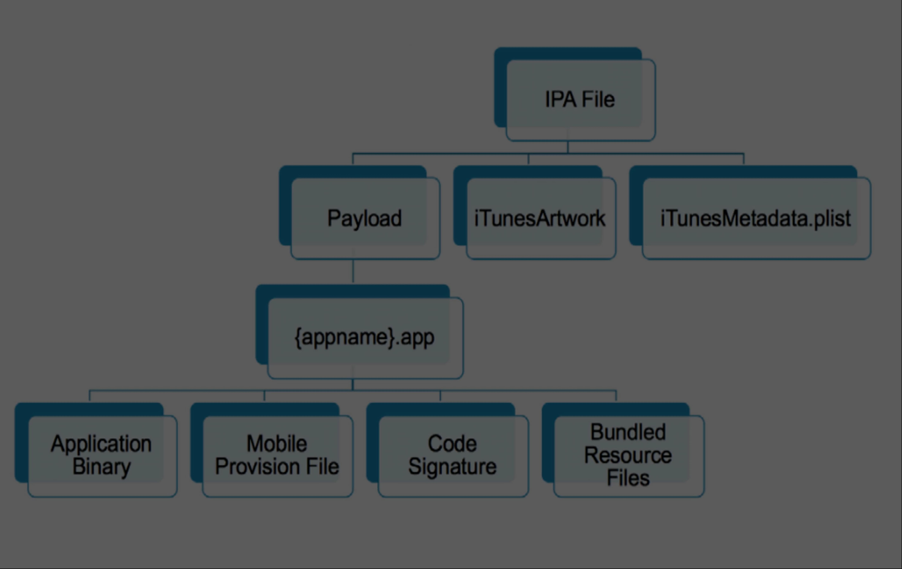

iOS 101: Static Analysis
| 3 minutes

Photo by Szabo Viktor on Unsplash
Getting started
In this article, we continue with the next phase after getting the IPA package. Static Application Analysis Testing (SAST) is a testing methodology to analyze the source code without executing and it detects the security issues based on code patterns.
There are some approaches to use when doing the SAST. While the automated scans catch the low-hanging fruit and the manual code review will cost much time and human effort, the hybird which is a combination of both approaches should be use, but this process is still tedious and time-consuming.
-
Manual code review: analyzing manually the application’s source code. It can use some keywords, patterns to detect the unsecure functions or some extensions which avalable on IDEs like (Linter, sanitizer, AST tool). Manual review is good for finding business logic flaws, design flaws. This requires a test reviewer who is proficient in the language and frameworks in use, and understanding the data flow.
-
Automated analysis: using atomated tools to speed up the review process. They check the source code for compliance with a predefined set of rules or industry best practices, then typically display a list of findings or warnings and flags for all detected violations.
Static analysis in Penetration Testing
If we are joining an in-house project, and having source code, hence we can easily do manual code review without efforts to reverse code. But if we are doing black-box testing aka penetration testing and just have an application binary file, we could do more to achieve more understanding about the application.
Static analysis is the first step to get overview of the application including the framework, the using services. It can also help detect some potential vulnerabilities before running like hard-coded sensitive data, misconfigurations or possible vulnerable functions …

iOS Binary Package
1. IPA File Structure
iOS apps are distributed in IPA (iOS App Store Package) archives which are basically ZIP-compressed archives. The IPA files include a binary for the ARM architecture and can only be installed on an iOS device. The IPA file can be uncompressed using an unzip utility.

2. Extracting the IPA
3. Other components
III. Common Flaws
1. Sensitive data in plist
2. Insecure app permissions
3. App Transport Security ATS
IV. IPA Binary Code Analysis
1. Insecure API
2. Insecure random function
3. Use logging function
4. Use Malloc function
5. Use weak hashing algorithms
V. Application runtime protection features
1. Address space layout randomization (ASLR) & PIE
2. Automatic Reference Counting (ARC)
3. Stack smashing protection
4. Rpath
NX
Symbols Stripped
Encrypted
Code Signatures
References:
Previous post
iOS 101: Awesome iOS Security Testing Tools